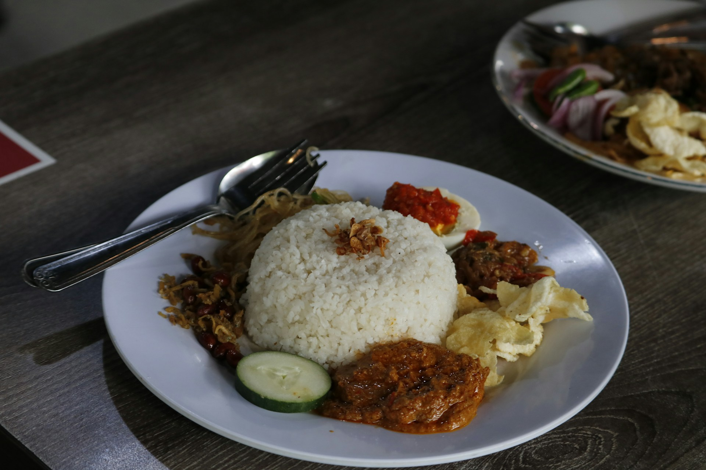

Home
Nasi Lemak

Nasi Lemak is a fragrant rice dish widely considered the national dish of Malaysia, and is heavily celebrated in Singapore, Brunei, and parts of Indonesia. The dish consists of rice steeped and cooked in rich coconut milk infused with knotted pandan leaves, giving it a distinctively creamy texture and sweet, tropical aroma.
Historically, Nasi Lemak began as a humble, rustic breakfast meal invented by the local farming and fishing communities along the coasts of the Malay Peninsula. It provided a cheap, high-calorie, and sustaining start to a grueling workday. Traditionally wrapped in a conical banana leaf packet, it is always served with a spicy chili paste (sambal), crispy fried anchovies (ikan bilis), toasted peanuts, and hard-boiled eggs.
Ingredients
- 300 grams long-grain rice, washed and drained
- 250 ml thick coconut milk
- 200 ml water (adjust according to your usual rice cooker requirements)
- 2 pandan leaves, tied into a knot
- 1 stalk of lemongrass, bruised
- 2 cm fresh ginger, thinly sliced
- 1/2 tsp salt
- For Serving: Spicy sambal sauce, fried anchovies, roasted peanuts, hard-boiled eggs, and fresh cucumber slices.
Instructions
- Place the washed and drained rice into the inner pot of a rice cooker.
- Add the coconut milk, water, pandan leaves, lemongrass, and ginger.
- Close the lid and cook according to the rice cooker's instructions.
- Once cooked, let it rest for a few minutes before fluffing with a fork.
- Serve hot with your choice of sambal, anchovies, peanuts, eggs, and cucumber slices.
- Garnish with the sliced green onion before serving.
- Discard the pandan leaves, lemongrass, and ginger before serving.
- Mound a portion of the fragrant coconut rice in the center of a plate (or banana leaf) and arrange the traditional sides—sambal, fried anchovies, peanuts, boiled egg, and cucumber—around the rice.